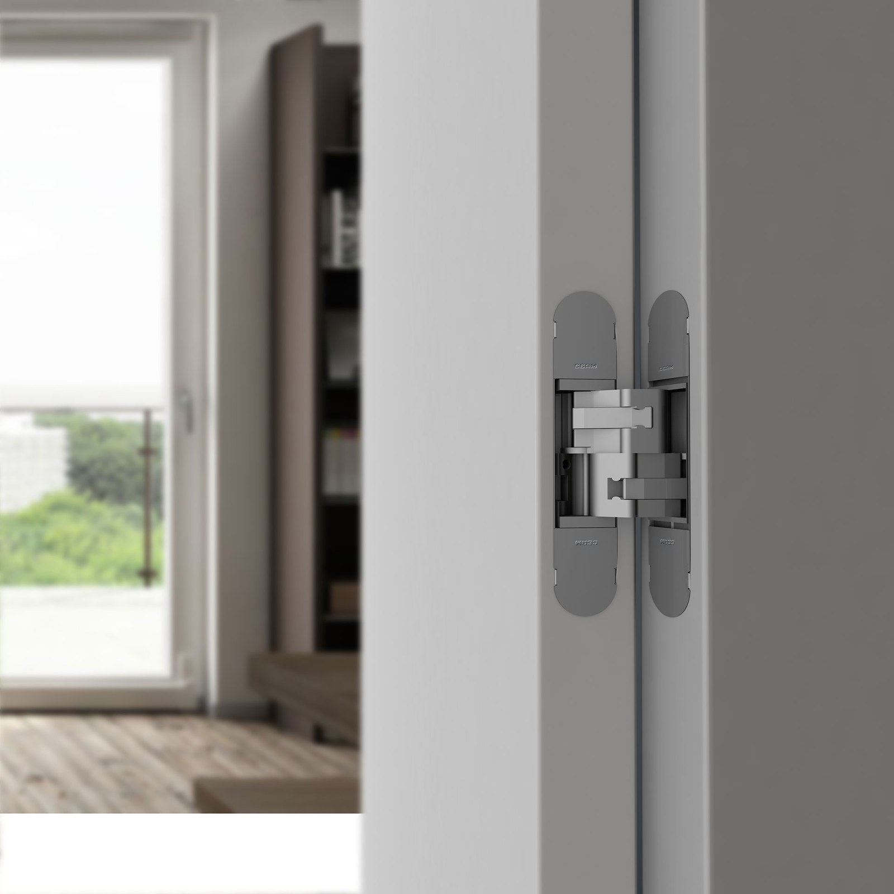

Для тяжёлых дверей; испытана для противопожарных дверей до 120 минут.
| Размер | 160 × 32 × 29 мм |
| Нагрузка | 80 кг на 2 петли · 120 кг на 3 |
| Мин. толщина двери | 38 мм |
| Двери | дерево, алюминий, сталь |
| Огнестойкость | EI30, EI60, EI120 |
| Отделки | серебристая окраска, бронза, брашированная бронза, матовый хром, никель, чёрный никель, сатинированный никель, латунь, чёрный лак, окраска шампань |